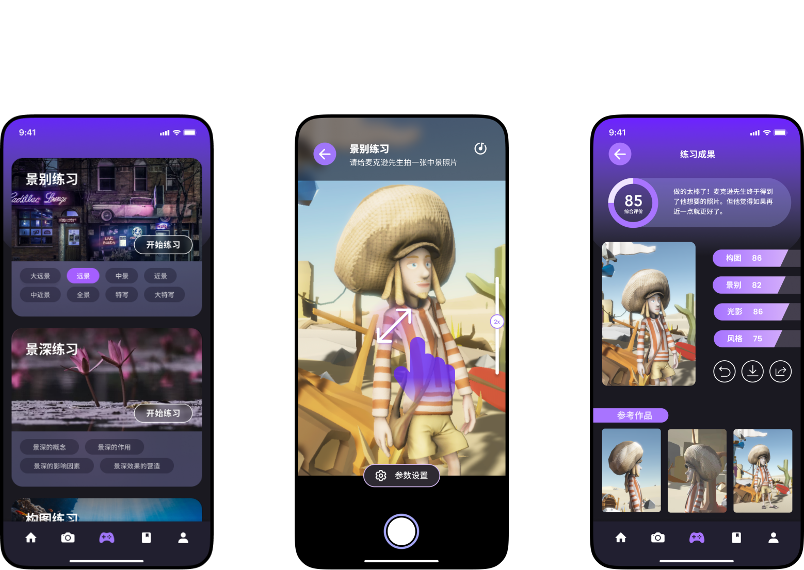
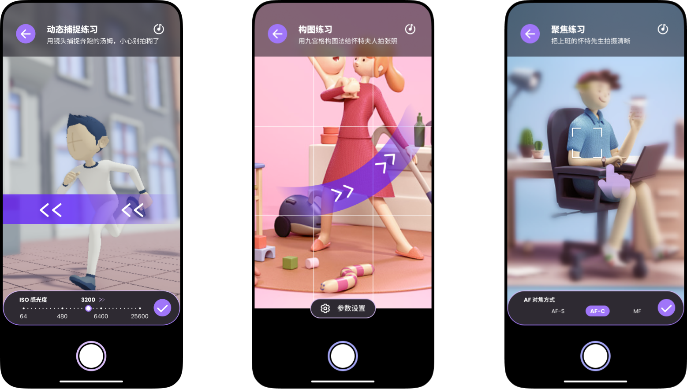
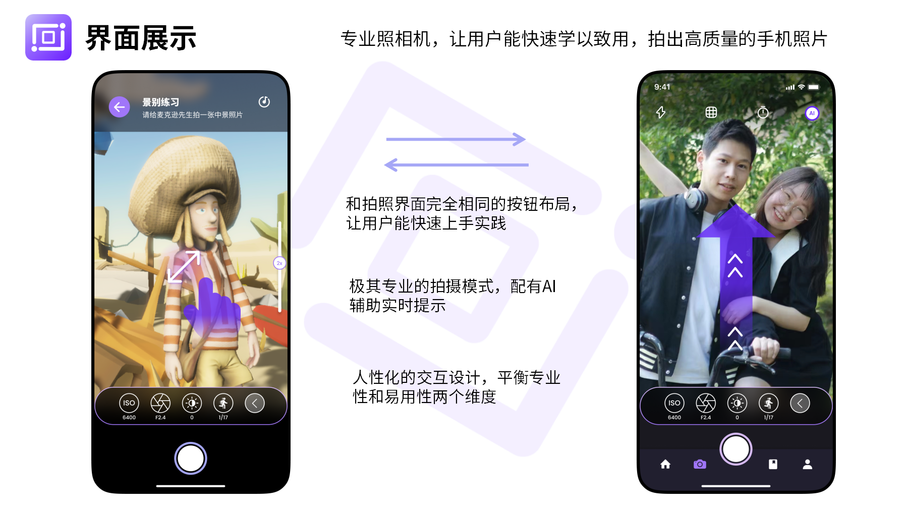
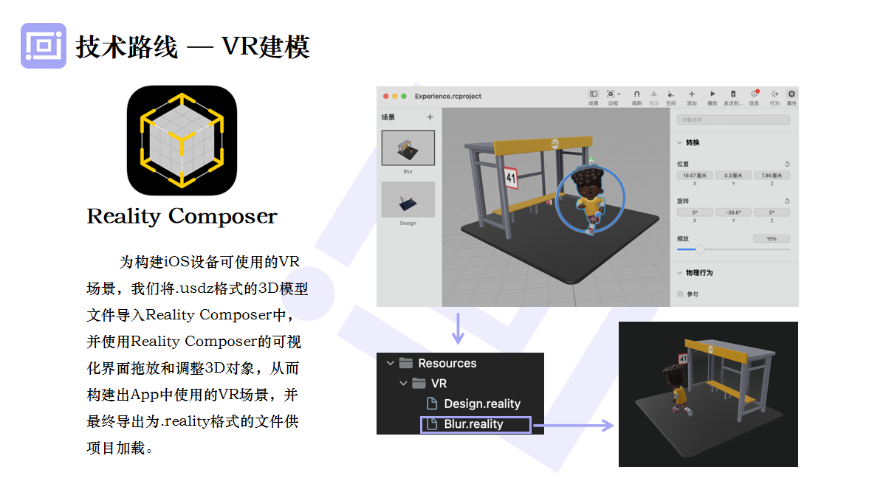
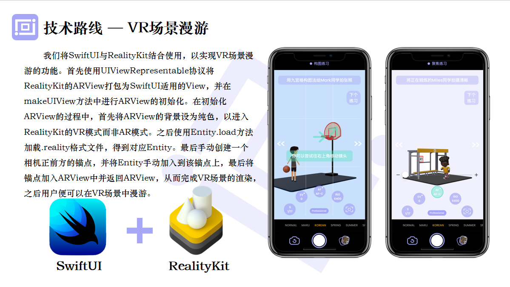
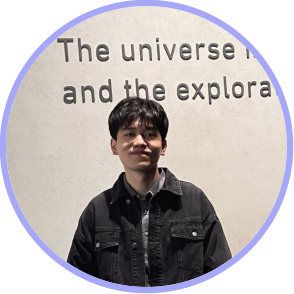
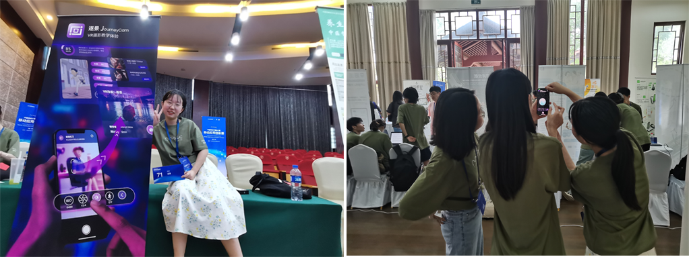
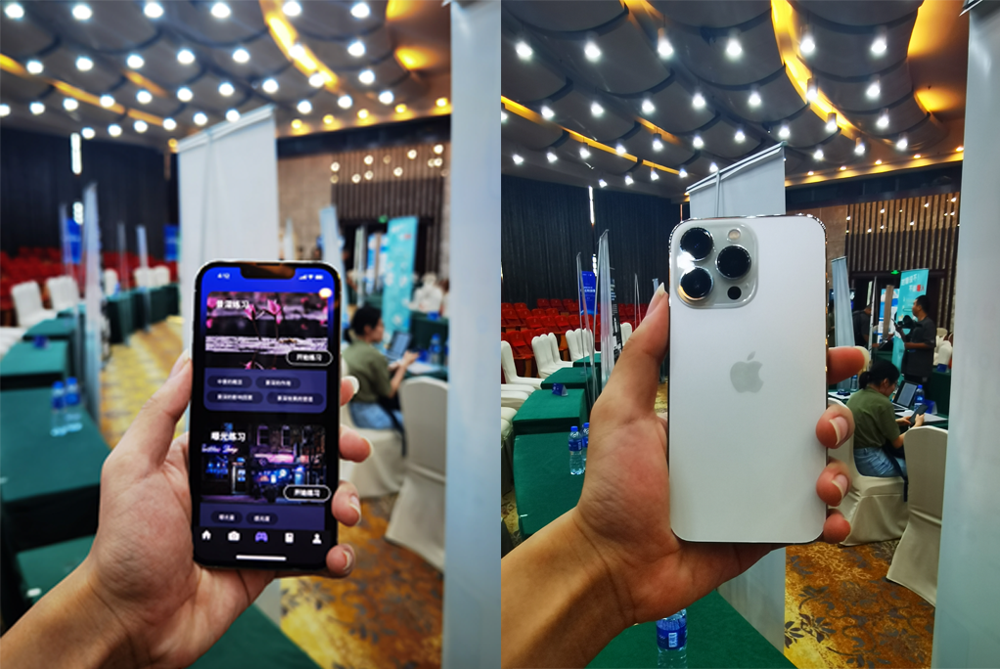

JourneyCam: VR-assisted photography teaching APP
Introduction
JourneyCam is a VR-assisted photography teaching app whose core function is to provide tutorials on professional photography with cell phones. With the help of VR game scenarios, we allow beginners to master the basics and techniques of photography in a relaxed and fun environment. In our APP, users can carry out the consolidation of theoretical knowledge of lens language and special training of core knowledge. Further, based on their understanding of lens language, users can use their imagination and creativity to freely control the camera to shoot in this virtual environment and complete various validation or creative experiments related to lens language.
Vedio
version1 : https://youtu.be/Lj__Qr6tTQM
version2 : https://youtu.be/Hek6Hc7RJVE





Collaborators

Team: Xin Liang, Lingjun Mao, ManXin Xu
Photos

